Analyzing Data in Real Time with Azure Stream Analytics
Overview
Azure Stream Analytics is a cloud-based service for ingesting high-velocity data streaming from devices, sensors, applications, Web sites, and other data sources and analyzing that data in real time. It supports a SQL-like query language that works over dynamic data streams and makes analyzing constantly changing data no more difficult than performing queries on static data stored in traditional databases. With Azure Stream Analytics, you can set up jobs that analyze incoming data for anomalies or information of interest and record the results, present notifications on dashboards, or even fire off alerts to mobile devices. And all of it can be done at low cost and with a minimum of effort.
Scenarios for the application of real-time data analytics are legion and include fraud detection, identity-theft protection, optimizing the allocation of resources (think of an Uber-like transportation service that sends drivers to areas of increasing demand before that demand peaks), click-stream analysis on Web sites, shopping suggestions on retail-sales sites, and countless others. Having the ability to process data as it comes in rather than waiting until after it has been aggregated offers a competitive advantage to businesses that are agile enough to make adjustments on the fly.
In this lab, you'll create an Azure Stream Analytics job and use it to analyze data streaming in from simulated Internet of Things (IoT) devices. And you'll see how simple it is to monitor real-time data streams for information of significance to your research or business.
Objectives
In this hands-on lab, you will learn how to:
- Create Azure event hubs and use them for Stream Analytics input and output
- Create a Stream Analytics job and test queries on sample data streams
- Run a Stream Analytics job and perform queries on live data streams
- Consume events from an event hub and display them in a Web app
Prerequisites
The following is required to complete this hands-on lab:
Exercises
This hands-on lab includes the following exercises:
Estimated time to complete this lab: 60 minutes.
Exercise 1: Create an event hub
Azure Stream Analytics supports several types of input, including input from Azure blobs and input from Azure event hubs. Of the two, the latter is typically more interesting because in the IoT world, data is easily transmitted to Azure event hubs through field gateways (for devices that are not IP-capable) or cloud gateways (for devices that are IP-capable), and a single Azure event hub can handle millions of events per second transmitted from devices spread throughout the world.
In this exercise, you'll create an Azure event hub to provide input to Azure Stream Analytics and configure it to so that it can be accessed safely and securely by IoT devices and gateways.
-
In your browser, navigate to the Azure Portal. If you are asked to sign in, do so using your Microsoft account.
-
In the portal, click + New, followed by Internet of Things and Event Hubs.

Adding a new event hub
-
Type a namespace name into the Name box. The name must be unique within Azure, so you will probably have to use something other than the name in the screen shot below. (A green check mark will appear in the box when the name you've entered is one that Azure will accept.) Select Create new under Resource group and enter the resource-group name "StreamAnalyticsResourceGroup" (without quotation marks). Choose the region closest to you in the Location drop-down, and then click the Create button.

Creating a namespace
-
Click Resource groups in the ribbon on the left, and then click the "StreamAnalyticsResourceGroup" resource group created in the previous step.

Opening the resource group
-
Wait until "Deploying" changes to "Succeeded." Then click the namespace whose name you specified in Step 3.
Click the browser's Refresh button occasionally to update the deployment status. Clicking the Refresh button in the resource-group blade refreshes the list of resources in the resource group, but does not reliably update the deployment status.

Opening the namespace
-
Click + Event Hub to add an event hub to the namespace.

Adding an event hub
-
Type "inputhub" (without quotation marks) into the Name box. Then click the Create button.

Creating an event hub
-
Wait for the event hub to be created. Then scroll to the bottom of the blade and click the event hub name.

Opening the event hub
-
In order to transmit events to the event hub from an application or device, you need to create a shared-access policy that includes Send permission. To begin, click Shared access policies, and then click + Add.

Adding a shared-access policy
-
Type "SendPolicy" (without quotation marks) into the Policy name box and check the Send box. Then click the Create button to create the new policy.

Creating a send policy
-
Wait a moment for SendPolicy to appear in the policies list, and then click it.

Opening the policy
-
Click the Copy button to the right of the CONNECTION STRING-PRIMARY KEY box to copy the connection string containing the policy's shared-access key to the clipboard. Then temporarily save the connection string by pasting it into your favorite text editor. You'll need it in the next exercise.

Copying the connection string to the clipboard
You have created an event hub that can ingest events and be used as the source of input to a Stream Analytics job. You have also created a policy that allows holders of that policy to send events to the event hub, and a connection string that references that policy. The next step is to use the connection string to transmit events to the event hub.
Exercise 2: Send events to the event hub
Applications, devices, and gateways can send events to Azure event hubs using the Azure Event Hubs REST API or the Advanced Message Queuing Protocol, or AMQP for short. In this exercise, you will write a Windows console app that uses AMQP to send events to the event hub you created in Exercise 1. Each event will represent a withdrawal from an ATM machine, and will contain relevant information such as the card number used for the withdrawal, the time and amount of the withdrawal, and a unique identifier for the ATM machine used.
-
Start Visual Studio 2015 and use the File -> New -> Project command to create a new Windows Console Application named "ATMEventGenerator."

Creating a new console app
-
In the Solution Explorer window, right-click the ATMEventGenerator project and select Manage NuGet Packages...

Managing NuGet Packages for the project
NuGet is a free and open-source package manager for Microsoft development platforms. It provides access to thousands of libraries, or packages, containing code to perform a variety of tasks. It is integrated into Visual Studio 2015, which makes it easy to add NuGet packages to your project and make a lot of things happen without writing a lot of code.
-
Click Browse. Then type "azure" (without quotation marks) into the search box. Click WindowsAzure.ServiceBus to select the Azure service-bus package from NuGet. Finally, click Install to install the latest stable version of the package. This package contains the APIs that your app will use to send events to the event hub.
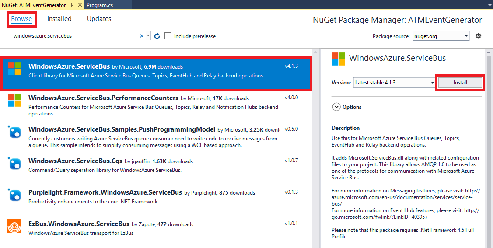
Installing WindowsAzure.ServiceBus
-
If prompted to review changes, click OK. Optionally check Do not show this again so you won't be prompted again.
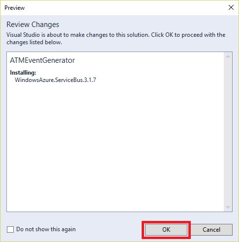
Reviewing changes
-
If prompted to accept a license for the package, click I Accept..

Accepting the package license
-
Return to the search box and type "newtonsoft," again without quotation marks. Select Newtonsoft.Json and click Install to install the latest stable version of Json.NET. This package contains convenient APIs for generating and consuming JSON. If prompted to review changes, click OK.
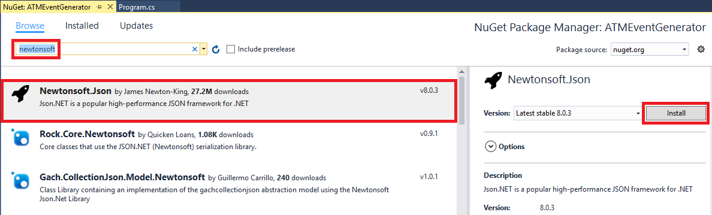
Installing Json.NET
-
Open Program.cs and add the following using statements to the using statements at the top of the file:
using Microsoft.ServiceBus.Messaging;
using Newtonsoft.Json;
-
Replace the empty Program class with the following implementation:
class Program
{
static double _probability = 0.01;
static int _transactions = 0;
static int _cardNumber = -1;
static string _connectionString = "connection_string";
static void Main(string[] args)
{
var rand = new Random();
var client = EventHubClient.CreateFromConnectionString(_connectionString, "inputhub");
while (true)
{
int card = 123456789 + rand.Next(0, 888888888);
// Occasionally generate a fraudulent transaction by reusing a card number
if (rand.NextDouble() < _probability && _cardNumber != -1)
{
card = _cardNumber;
_cardNumber = -1;
}
// Formulate a transaction
var transaction = new {
transactionId = _transactions++,
transactionTime = DateTime.UtcNow.ToString(),
deviceId = 12345 + rand.Next(0, 88888),
cardNumber = card,
amount = rand.Next(1, 20) * 20
};
// Occasionally record a card number for later use in generating fraud
if (rand.NextDouble() < _probability)
{
_cardNumber = transaction.cardNumber;
}
// Send an event to the event hub
var message = JsonConvert.SerializeObject(transaction);
client.Send(new EventData(Encoding.UTF8.GetBytes(message)));
Console.WriteLine("[{0}] Event transmitted", transaction.transactionId);
}
}
}
-
Replace connection_string in line 6 with the connection string you copied to the clipboard (and hopefully into your favorite text editor) in Exercise 1, Step 12.
-
Remove ";EntityPath=inputhub" from the end of the connection string. The _connectionString field should now look something like this:
static string _connectionString = "Endpoint=sb://streamanalytics-lab.servicebus.windows.net/;SharedAccessKeyName=SendPolicy;SharedAccessKey=Zx/fjB8kH3nuW789pUpXJ1S45FkCamJq9gYku6cRD3Y=";
-
Press Ctrl+F5 to run the program and confirm that you see output similar to the following. Each line represents one event sent to the event hub, and events will roll by at a rate of several per second. (Rates will vary depending on your connection speed.) Confirm that no exceptions are reported in the output.

Sending events to the event hub
-
Press Ctrl+C to stop the flow of events. Then press Enter to close the Command Prompt window.
In real life, there would be real ATM machines sending events to the event hub. ATMEventGenerator simulates these events in software and sets the stage for you to build and test a Stream Analytics job that analyzes these events.
Exercise 3: Create a Stream Analytics job
In this exercise, you will use the Azure Portal to create a Stream Analytics job and connect it to the event hub you created in Exercise 1. You will also capture the raw data being passed to the Stream Analytics job from the event hub and examine its structure.
-
Return to the Azure Portal and click + New, followed by Internet of Things and Stream Analytics job.

Creating a Stream Analytics job
-
Type "ATMAnalytics" (without quotation marks) into the Job name box. Select Use Existing under Resource group and select the "StreamAnalyticsResourceGroup" resource group that you created in Exercise 1. Select the region nearest you for Location. (It is important to select the same region that you selected for the event hub in Exercise 1, because you're not charged for data that moves within a data center, but you typically are charged for data that moves between data centers. In addition, locating services that talk to each other in the same data center reduces latency.) Then click the Create button.

Specifying parameters for the Stream Analytics job
-
Click Resource groups in the ribbon on the left, and then click the "StreamAnalyticsResourceGroup" resource group.
Opening the resource group
-
Click ATMAnalytics to open the Stream Analytics job in the portal.

Opening the Stream Analytics job
-
Click Inputs to add an input to the Stream Analytics job.

Adding an input
-
Click + Add.

Adding an input
-
Type "Withdrawals" (without quotation marks) into the Input alias box. Make sure Source Type is set to Data stream and Source is set to Event hub. Also make sure Subscription is set to Use event hub from current subscription, Service bus namespace is set to the namespace you specified in Exercise 1, Step 3, and the event hub you created in Exercise 1 ("inputhub") is selected under Event hub name. Then select RootManageSharedAccessKey from the Event hub policy name drop-down and click the Create button at the bottom of the blade.

Creating an input
-
After a few moments, the new input — "Withdrawals" — appears in the list of inputs for the Stream Analytics job. Click it to open a blade for it.

Opening the input
-
Return to Visual Studio and start the ATMEventGenerator app again.
-
With ATMEventGenerator still running, return to the Azure Portal open in your browser and click Sample Data.

Sampling input data
-
Click OK to begin sampling data from the input stream.

Specifying sampling parameters
-
Wait a few seconds for sampling to complete, and when you are notified that the sample data can be downloaded, click to download it.

Data sampling completed
-
Click Download to download the data sampled from the input stream.

Downloading sample data
-
Save the JSON file that is downloaded to a location where you can easily find it. Then open the downloaded file in your favorite text editor and take a moment to examine its contents. How many rows (events) are represented in the sample data? What is the structure of each row — that is, what fields does each row contain?
If you find the output hard to digest since there are no line breaks, try pasting it into an online JSON viewer such as the one at https://jsonformatter.curiousconcept.com/.
-
Return to the console window in which ATMEventGenerator is running and press Ctrl+C to stop it. Then press Enter to close the window.
You have connected a Stream Analytics job to an event hub and demonstrated that data is passed from one to the other. You have also sampled the data input to the Stream Analytics job and examined its structure. The next step is to do something with it — specifically, to bring the power of Azure Stream Analytics to bear on the data.
Exercise 4: Prepare queries and test with sample data
Now that your job is set up, there's much more you can do with Stream Analytics than simply view the raw data presented to it. The whole point of Stream Analytics is being able to query the data in real time. In this exercise, you'll use the Stream Analytics Query Language to query a sample data set for potentially fraudulent ATM transactions. It is always a good idea to test your queries against sample data before deploying them against live data streams, because with sample data, you can verify that a known set of inputs produces the expected outputs.
To flag potentially fraudulent withdrawals from ATMs, you will query for transactions performed with the same ATM card at different ATM machines within a specified time window (60 seconds). In real life, you would probably use a larger time window and perhaps even factor in the distance between ATM machines. However, a narrower time window is useful in a lab environment because it allows you to perform meaningful experiments in minutes rather than hours.
-
Begin by returning to the Stream Analytics job in the portal and clicking Query.

Opening the query viewer
-
Click the ellipsis (the three dots) to the right of Withdrawals and select Upload sample data from file from the menu.

Uploading sample data for testing queries
-
Click the folder icon on the right and select the file named Withdrawals.json in this lab's "resources" directory. Then click OK to upload the file.

Uploading Withdrawals.json
-
When the upload is complete, enter the following query, and then click the Test button to execute it against the sample data you uploaded:
SELECT * FROM Withdrawals
Where did the name "Withdrawals" come from? That's the alias you assigned to the event-hub input in the previous exercise. If you named it differently, you'll need to replace "Withdrawals" with the alias you used.

Testing a query
-
Confirm that you see the output pictured below. The test data contains 607 rows. Each row has fields named TRANSACTIONID, TRANSACTIONTIME, DEVICEID, CARDNUMBER, and AMOUNT. DEVICEID is the ID of the ATM machine at which the transaction took place. AMOUNT is the amount of cash withdrawn from the ATM.

Query results
-
Suppose you only wanted to view transactions for amounts between 200 and 300, inclusive. Furthermore, suppose you wanted to clean up the output by assigning your own column names and excluding the TRANSACTIONID column. Enter the following query and click Test again to execute it.
SELECT TransactionTime as [Time of Transaction],
DeviceID as [ATM],
CardNumber as [Card Number],
Amount as [Amount]
FROM Withdrawals
WHERE Amount >= 200 and Amount <= 300
-
Confirm that the query generated the following output:

Customizing the output
-
One of the key features of the Stream Analytics Query Language is its ability to group results using windows of time whose length you specify. To demonstrate, enter the following query to count the number of transactions taking place each minute and click Test to execute it:
SELECT System.Timestamp as [Time Ending],
COUNT(*) AS [Number of Transactions]
FROM Withdrawals TIMESTAMP BY TransactionTime
GROUP BY TumblingWindow(n, 1)
TIMESTAMP BY is an important element of the Stream Analytics Query Language. If it was omitted from the query above, you would be querying for the number of transactions that arrived at the event hub each minute rather than the number of transactions that occurred in each 1-minute interval. TIMESTAMP BY allows you to specify a field in the input stream as the event time.
-
Confirm that you see the output below:

Querying for the number of transactions per minute
-
Now it's time to query the test data for potentially fraudulent transactions — transactions involving the same ATM card but different ATM machines that take place within 60 seconds of each other. This is the query you will use in a subsequent exercise against a live data stream.
Enter the following query and click Test to execute it:
SELECT W1.CardNumber as [Card Number],
W1.DeviceID as [ATM 1], W2.DeviceID as [ATM 2],
W1.TransactionTime as [Time 1], W2.TransactionTime as [Time 2]
FROM Withdrawals W1 TIMESTAMP BY TransactionTime
JOIN Withdrawals W2 TIMESTAMP BY TransactionTime
ON W1.CardNumber = W2.CardNumber
AND DATEDIFF(ss, W1, W2) BETWEEN 0 and 60
WHERE W1.DeviceID != W2.DeviceID
-
This time the output should contain just three rows, each representing two transactions performed with one ATM card at two different locations within 60 seconds of each other:

Detecting potentially fraudulent transactions
-
Click the Save button at the top of the blade to save the query. Then click Yes when asked to confirm.

Saving the query
With the query now formulated, tested against a set of sample data, and saved, it's almost time to deploy it against a live data stream to produce a running record of potentially fraudulent transactions. But first, you need to add an output to the Stream Analytics job.
Exercise 5: Add an event hub for output
Being able to run queries and see the results in the portal is great for testing, but the whole point of Stream Analytics is being able to query live data streams. Azure Stream Analytics supports a variety of output types, including blobs, Azure SQL databases, and event hubs. You can designate blob storage as the destination for output from a Stream Analytics job to generate a persistent record of query results. Another useful scenario involves using event hubs as output. Because software can subscribe to events from event hubs, developers can build custom applications that show Stream Analytics output in real time.
In this exercise, you will create an event hub for output, and then configure the Stream Analytics job to write output to the event hub. In the next exercise, you will write an app that connects to the output event hub.
-
Return to the "StreamAnalyticsResourceGroup" resource group and click the event-hub namespace you created in Exercise 1.
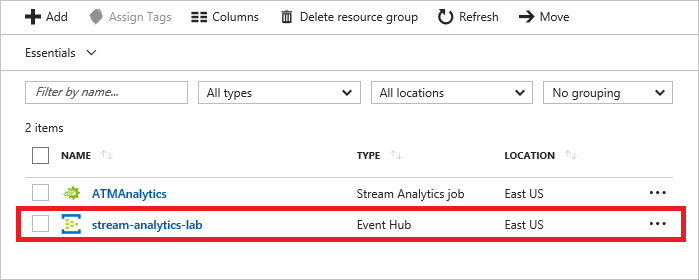
Opening the namespace
-
Click + Event Hub to add an event hub to the namespace.
Adding an event hub
-
Type "outputhub" (without quotation marks) into the Name box. Then click the Create button.
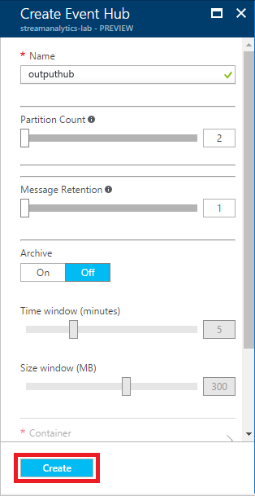
Creating an event hub
-
Wait a moment for the event hub to be created. Then scroll to the bottom of the blade and click the event hub name.
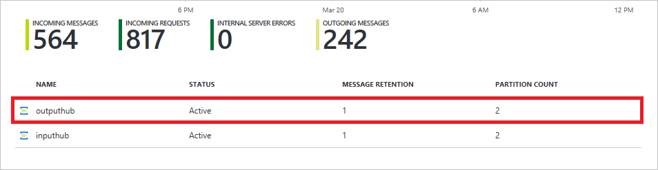
Opening the event hub
-
In order to receive events from an event hub, you need to create a shared-access policy that includes Listen permission. To begin, click Shared access policies, and then click + Add.
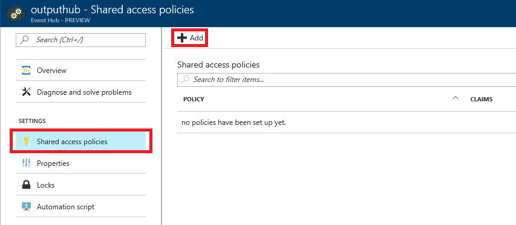
Adding a shared-access policy
-
Type "ReceivePolicy" (without quotation marks) into the Policy name box and check the Listen box. Then click the Create button to create the new policy.

Creating a send policy
-
Wait a moment for ReceivePolicy to appear in the policies list, and then click it.
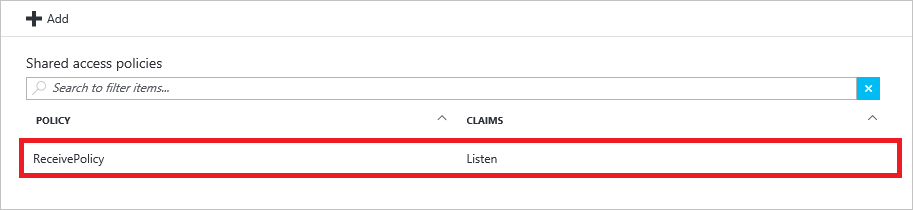
Opening the policy
-
Click the Copy button to the right of the CONNECTION STRING-PRIMARY KEY box to copy the connection string containing the policy's shared-access key to the clipboard. Then temporarily save the connection string by pasting it into your favorite text editor. You'll need it in the next exercise.

Copying the connection string to the clipboard
-
Return to the "StreamAnalyticsResourceGroup" resource group and click ATMAnalytics to open the Stream Analytics job in the portal.
Opening the Stream Analytics job
-
Click Outputs.

Creating an output
-
Click + Add.

Adding an output
-
Type "FlaggedWithdrawals" (without quotation marks) into the Output alias box. Make sure Sink is set to Event hub and Import option is set to Use event hub from current subscription. Under Service bus namespace, select the namespace you created in Exercise1, and select outputhub from the Event hub name list. Set Event hub policy name to RootManageSharedAccessKey, and then click Create.
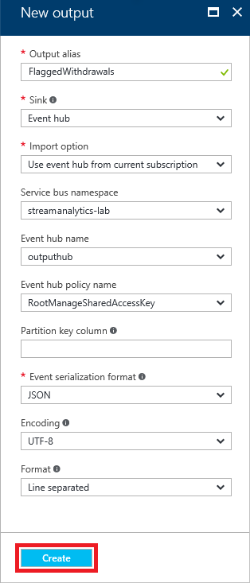
Creating an output
Now that you have directed the output from the Stream Analytics job to an event hub, the next task is to write an app that consumes events from that event hub.
Exercise 6: Build a real-time dashboard
In this exercise, you will use Visual Studio to write an ASP.NET MVC Web app that connects to the output event hub and displays real-time notifications of potentially fraudulent transactions. You will also create a storage account required by the dashboard.
-
Return to the Azure Portal and click + New in the ribbon on the left. Then click Storage, followed by Storage account.

Adding a storage account
-
In the ensuing blade, enter a name for the new storage account in Name field.
Storage account names must be 3 to 24 characters in length and can only contain numbers and lowercase letters. In addition, the name you enter must be unique within Azure.
Once you have a unique name that Azure will accept (as indicated by the green check mark in the Name field), select Use existing under Resource group and select the resource group named "StreamAnalyticsResourceGroup" so the storage account will belong to the same resource group as the Stream Analytics job and the event hub. Select the location nearest you (the same one you selected for the event hub in Exercise 1 and the Stream Analytics job in Exercise 3) in the Location box. Then click the Create button at the bottom of the blade.

Creating a storage account
-
Click Resource groups in the ribbon on the left, and then click the "StreamAnalyticsResourceGroup" resource group.
Opening the resource group
-
Click the storage account you created in Step 2.

Opening the storage account
-
Click Access keys, and click the Copy button to the right of the key1 box to the copy the storage account's access key to the clipboard. Then temporarily save the access key by pasting it into your favorite text editor. You'll need it later in this exercise.
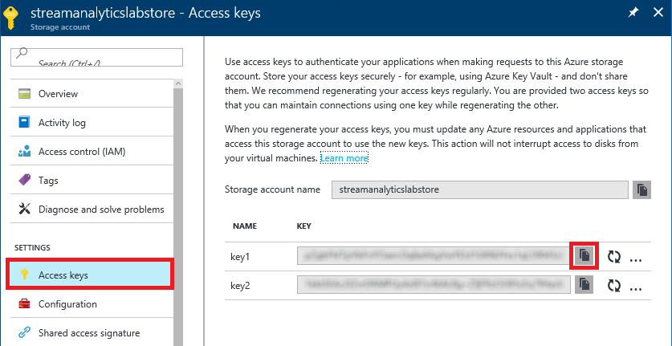
Copying the access key
-
Start a new instance of Visual Studio 2015 and use the File -> New -> Project command to create a new ASP.NET Web Application named "ATMDashboard."
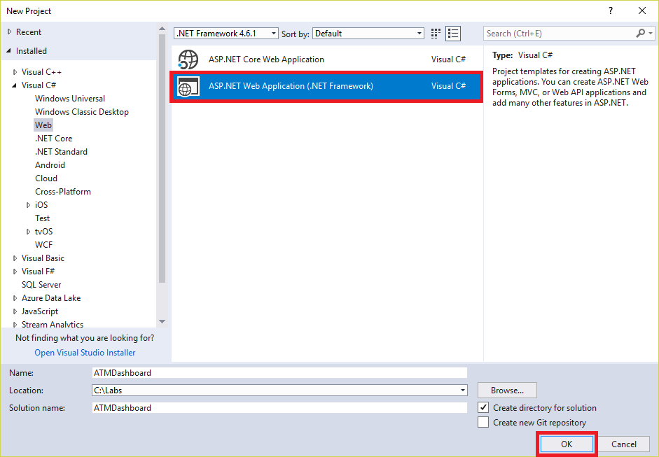
Creating a new Web app
-
In the "New ASP.NET Project" dialog, select MVC and check the Web API box. If Host in the cloud is checked, uncheck it. (For testing purposes, you will run this Web app locally.) Then click OK.

Specifying parameters for the Web app
-
In the Solution Explorer window, right-click the ATMDashboard project and select Manage NuGet Packages...
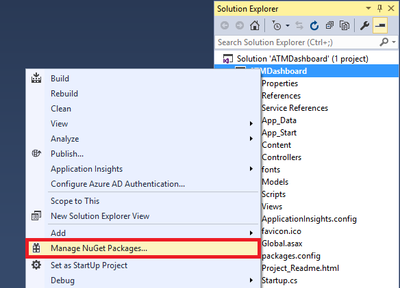
Managing NuGet Packages for the project
-
Click Browse. Then type "eventprocessor" (without quotation marks) into the search box. Click Microsoft.Azure.ServiceBus.EventProcessorHost to select the Azure EventProcessorHost package from NuGet. Finally, click Install to install the latest stable version of the package. This package contains the APIs that your app will use to receive events from the output event hub. Click OK if you're prompted review changes, and I Accept when prompted to accept licenses for the downloaded packages.

Installing EventProcessorHost
-
Right-click the project in the Solution Explorer window and use the Add -> Class command to add a class file named ATMEvent.cs to the project.

Adding the ATMEvent class
-
Add the following using statement at the top of the file:
-
Implement the ATMEvent class as follows:
public class ATMEvent
{
[JsonProperty(PropertyName = "card number")]
public string CardNumber { get; set; }
[JsonProperty(PropertyName = "atm 1")]
public string ATM1 { get; set; }
[JsonProperty(PropertyName = "atm 2")]
public string ATM2 { get; set; }
[JsonProperty(PropertyName = "time 1")]
public string TransactionTime1 { get; set; }
[JsonProperty(PropertyName = "time 2")]
public string TransactionTime2 { get; set; }
}
-
Right-click the project in the Solution Explorer window and use the Add -> Class command to add a class file named ATMEventAggregator.cs to the project.
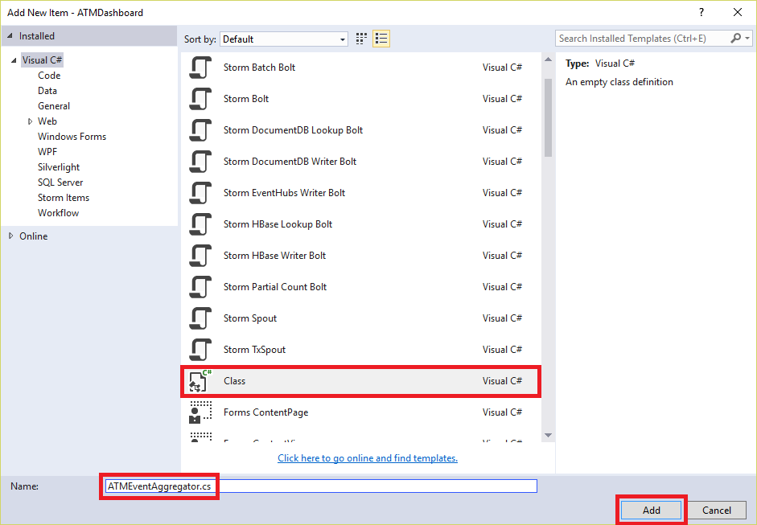
Adding the ATMEventAggregator class
-
Implement the ATMEventAggregator class as follows:
public static class ATMEventAggregator
{
private static List<ATMEvent> _events = new List<ATMEvent>();
public static void LogEvent(ATMEvent e)
{
if (_events.Count < 1024) // Avoid unconstrained memory growth
{
_events.Add(e);
}
}
public static ATMEvent[] GetLoggedEvents()
{
var events = _events.ToArray();
_events.Clear();
return events;
}
}
-
Right-click the project in the Solution Explorer window and use the Add -> Class command to add a class file named SimpleEventProcessor.cs to the project.

Adding the SimpleEventProcessor class
-
Add the following using statements to the ones at the top of the file:
using Microsoft.ServiceBus.Messaging;
using System.Diagnostics;
using System.Threading.Tasks;
using Newtonsoft.Json;
using System.Text;
-
Implement the SimpleEventProcessor class as follows:
class SimpleEventProcessor : IEventProcessor
{
Stopwatch checkpointStopWatch;
async Task IEventProcessor.CloseAsync(PartitionContext context, CloseReason reason)
{
Debug.WriteLine("Processor Shutting Down. Partition '{0}', Reason: '{1}'.", context.Lease.PartitionId, reason);
if (reason == CloseReason.Shutdown)
{
await context.CheckpointAsync();
}
}
Task IEventProcessor.OpenAsync(PartitionContext context)
{
Debug.WriteLine("SimpleEventProcessor initialized. Partition: '{0}', Offset: '{1}'", context.Lease.PartitionId, context.Lease.Offset);
this.checkpointStopWatch = new Stopwatch();
this.checkpointStopWatch.Start();
return Task.FromResult<object>(null);
}
async Task IEventProcessor.ProcessEventsAsync(PartitionContext context, IEnumerable<EventData> messages)
{
foreach (EventData eventData in messages)
{
string data = Encoding.UTF8.GetString(eventData.GetBytes());
Debug.WriteLine(string.Format("Message received. Partition: '{0}', Data: '{1}'",
context.Lease.PartitionId, data));
// Log the event
ATMEvent e = JsonConvert.DeserializeObject<ATMEvent>(data);
ATMEventAggregator.LogEvent(e);
}
if (this.checkpointStopWatch.Elapsed > TimeSpan.FromMinutes(5))
{
await context.CheckpointAsync();
this.checkpointStopWatch.Restart();
}
}
}
-
Open Global.asax.cs and add the following using statements:
using Microsoft.ServiceBus.Messaging;
using System.Diagnostics;
-
In Global.asax.cs, add the following statements to the end of the Application_Start method:
string eventHubConnectionString = "connection_string";
string eventHubName = "outputhub";
string storageAccountName = "storage_account_name";
string storageAccountKey = "storage_account_key";
string storageConnectionString = string.Format("DefaultEndpointsProtocol=https;AccountName={0};AccountKey={1}", storageAccountName, storageAccountKey);
string eventProcessorHostName = Guid.NewGuid().ToString();
EventProcessorHost eventProcessorHost = new EventProcessorHost(eventProcessorHostName, eventHubName, EventHubConsumerGroup.DefaultGroupName, eventHubConnectionString, storageConnectionString);
Debug.WriteLine("Registering EventProcessor...");
var options = new EventProcessorOptions();
options.ExceptionReceived += (sender, e) => { Debug.WriteLine(e.Exception); };
eventProcessorHost.RegisterEventProcessorAsync<SimpleEventProcessor>(options).Wait();
Debug.WriteLine("Receiving...");
-
Replace connection_string in line 1 with the connection string you copied to the clipboard (and hopefully into your favorite text editor) in Exercise 5, Step 8.
-
Remove ";EntityPath=outputhub" from the end of the connection string. The eventHubConnectionString variable declaration should now look something like this:
string eventHubConnectionString = "Endpoint=sb://streamanalytics-lab.servicebus.windows.net/;SharedAccessKeyName=ReceivePolicy;SharedAccessKey=3XHaU3pm5t82WxA43hUM/bWa7kQmuAsqzJ1rVJq3Qv0=";
-
Replace storage_account_name in line 3 with the the name of the storage account you created in Step 2 of this exercise, and storage_account_key in line 4 with the access key you saved in Step 5.
This storage account has nothing to do with the Stream Analytics job; it's used by the EventProcessorHost class.
-
In Solution Explorer, right-click the "Controllers" folder and use the Add -> Controller command to add an empty Web API 2 controller.

Adding a Web API Controller
-
Name the controller "EventsController" (without quotation marks). Then click Add.

Naming the Web API Controller
-
Add the following method to the EventsController class:
public ATMEvent[] GetEvents()
{
return ATMEventAggregator.GetLoggedEvents();
}
The controller you just added is a Web API controller. It exposes a REST method that can be called over HTTP to retrieve the latest events that ATMEventAggregator received from the event hub.
-
Open Index.cshtml in the project's "Views/Home" folder and replace its contents with the following statements:
@{
ViewBag.Title = "Home Page";
}
<div class="jumbotron">
<h1>ATM Dashboard</h1>
<p class="lead">The table below lists potentially fraudulent ATM transactions and is updated every 5 seconds.</p>
</div>
<div class="row">
<div class="col-xs-12">
<table id="output" style="width: 100%">
<tr>
<td><b>Card Number</b></td>
<td><b>ATM 1</b></td>
<td><b>ATM 2</b></td>
</tr>
</table>
</div>
</div>
@section scripts {
<script type="text/javascript">
$(function () {
// Check for new events every 5 seconds
window.setInterval(function () {
$.ajax({
url: "/api/events",
success: function (result) {
for (i = 0; i < result.length; i++) {
$("#output tr:last").after("<tr><td>" + result[i]["card number"] + "</td><td>" + result[i]["atm 1"] + "</td><td>" + result[i]["atm 2"] + "</td></tr>");
}
},
error: function (xhr, status, error) {
if (status == "error") {
console.log("Error: " + xhr.status);
}
},
dataType: "json"
});
}, 5000);
});
</script>
}
See what's happening here? In addition to modifying the view's UI to include an HTML table in which ATM events can be displayed, you added a script block that uses jQuery's $.ajax method to call back to the server every 5 seconds. The endpoint for the call is the method you implemented in the Web API controller in the previous step. When that method returns one or more events, rows are added to the table to display them.
-
Go to the Build menu at the top of the Visual Studio window and use the Build Solution command to build the solution. Correct any build errors that are reported, and then press Ctrl+F5 to launch the application in your browser. Confirm that the application looks like this:

The ATM dashboard
Leave the browser open with the application running. And don't be alarmed if a few events show up the first few seconds the dashboard is open. Those are simply events that the event hub cached. You'll be generating new events in the next exercise.
Exercise 7: Analyze a live data stream
Almost there! Now it's time to run the Stream Analytics job and see the output in your dashboard.
-
Return to the Azure Portal and open the blade for the Stream Analytics job. Then click Start.

Starting the Stream Analytics job
-
Make sure Job output start time is set to Now, and then click the Start button to start running the job.

Specifying the job start time
-
Wait until the Stream Analytics job starts. Then return to the instance of Visual Studio in which the ATMEventGenerator project is open and start ATMEventGenerator again to pump events into the input event hub.
If you'd like, you can run several instances of ATMEventGenerator simultaneously to increase the volume of events.
-
Return to the ATMDashboard application running in your browser and watch for a few minutes. Every so often, a line should appear representing a potentially fraudulent transaction and identifying the ATM card number and the ATMs at which the card was used.

Potentially fraudulent transactions
-
Return to the Stream Analytics job in the portal and click the Stop button to stop it. Then click Yes when asked if you're sure you want to stop the job.

Stopping the Stream Analytics job
-
Return to the console window in which ATMEventGenerator is running and press Ctrl+C to terminate it.
You now have a Web app that displays output from a Stream Analytics job in near real-time. There are other ways to build such dashboards, including Microsoft Power BI. With Power BI, you can create dashboards that render output from Stream Analytics jobs without writing any code. For more information, refer to Stream Analytics & Power BI: A real-time analytics dashboard for streaming data.
Summary
Azure Stream Analytics is a powerful tool for analyzing live data streams from IoT devices or anything else that's capable of transmitting data. In this lab, you got a first-hand look at Stream Analytics as well as Azure event hubs. Among other things, you learned how to:
- Create an Azure event hub and use it as a Stream Analytics input
- Write a C# app that transmits events to an event hub
- Create a Stream Analytics job and test queries on sample data streams
- Run a Stream Analytics job and perform queries on live data streams
- Create a rule (query) that detects anomalies in streaming data
- Display output from a Stream Analytics job in a Web app
One drawback to hard-coding rules into Stream Analytics is that rules don't "learn" from the data streams, which can lead to false positives in anomaly detection. If this concerns you, read the article entitled Anomaly Detection – Using Machine Learning to Detect Abnormalities in Time Series Data in the Azure team's Machine Learning blog. In it, they present an anomaly detection service accessible through a REST API that uses Azure Machine Learning to learn from the data presented to it. Imagine combining the power of Stream Analytics to extract information from real-time data streams with the power of Azure Machine Learning to learn from that information and refine the analytics on the fly. This is precisely the type of solution that Microsoft Azure empowers you to build!
Copyright 2017 Microsoft Corporation. All rights reserved. Except where otherwise noted, these materials are licensed under the terms of the MIT License. You may use them according to the license as is most appropriate for your project. The terms of this license can be found at https://opensource.org/licenses/MIT.